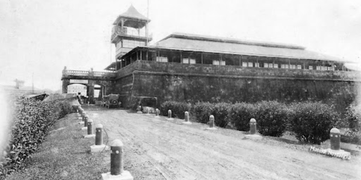

Now
Now

Then⇆
Intramuros, Manila · Luzon
The citadel where Rizal spent his final days — and where he wrote his immortal farewell.
Built by Spanish colonizers in 1571, Fort Santiago served as the seat of colonial military power for over three centuries. Rizal was imprisoned here in 1896. In his final days within these stone walls, he wrote Mi Último Adiós — hidden inside an alcohol stove, to be discovered after his death. Today, bronze footprints embedded in the ground trace the very path he walked on the morning of December 30, 1896.
Location
Pinned location on Google Maps
Then vs. Now
Now

ThenDid You Know?
"I want to show those who deny our patriotism that we know how to die for our duty and our convictions."
Continue Exploring